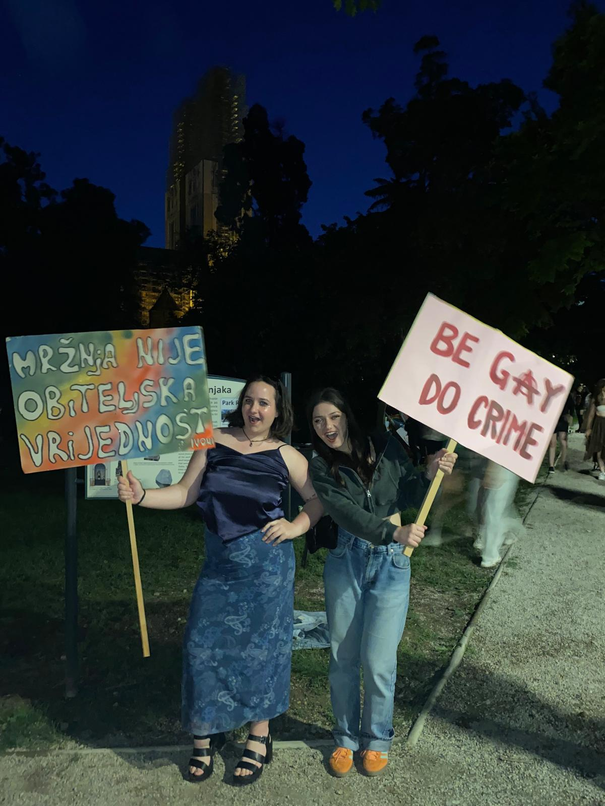
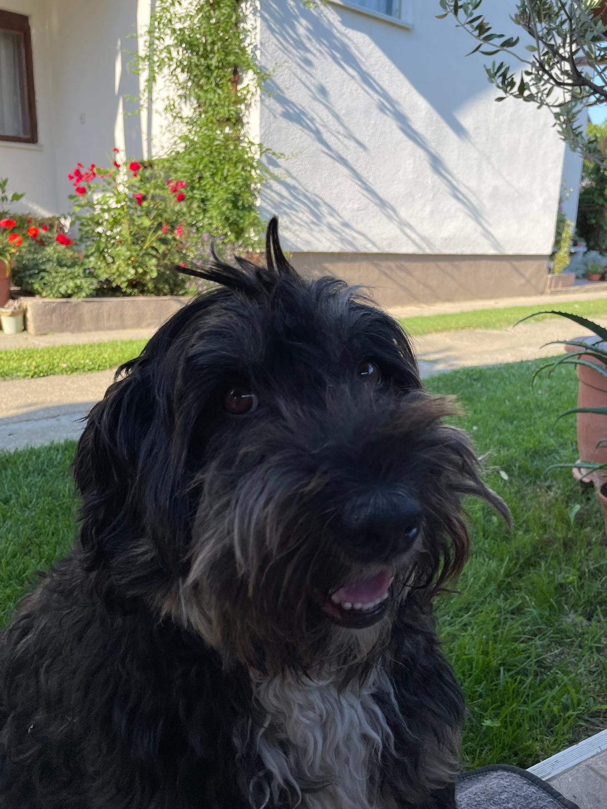

Moje ime je Mia Patrčević. Imam 19 godina. Prva sam godina Grafičkog dizajna proizvoda na Grafičkom fakultetu, Sveučilište u Zagrebu. Odrasla sam u Virovitici, malom gradu nsmještenom na rubu Slavonije i Podravine, na području prostranih ravnica okružene brdovitimm ograncima Bilogore. Sada, za vrijeme studiranja, boravim u Zagrebu naravno, u studentskom domu Stjepana Radića. Ovo je prvi put da živim samostalno, odvojeno od svoje obitelji. Ova prva godina studiranja je bila vrlo turbulentna s obzirom na to da se cijeli moj život promijenio sa svih strana, ali mislim da sam dobro podnijela te promjene. Akademska godina se približava kraju, a ta činjenica mi se i dalje čini nevjerojatna. Kao da vrijeme nikada nije brže protjecalo. Mala digresija, ali vratimo se mi bitnim temama - ja. Opisala bih se kao osobu koja je kreativna( naravno, idem na Grafički dizajn ), većinu dana voli ljude, ali izrazito cijeni dobro kvalitetno vrijeme provedeno sa sobom. Volim prirodu, noćno nebo( makar u Zagrebu i nije toliko impresivno ), knjige, snove, putovanja, glazbu, umjetnost. Ukratko, ljudsko sam biće i cijenim stvari koje me okružuju. Ispod ovog podužeg paragrafa teksta - svaka čast ako ste ga ucijelosti pročitali, možete pronaći neke drage ljude, popis knjiga te filmova koji su na mene ostavili dubok trag.
Sika 1, Mladost ludost
Ova prva fotografija prikazuje drage curke koje sam upoznala vrlo nedavno. Ali vrijeme provedeno s njima toliko me promijenilo u svakom pogledu mog bića, tako da se nikada nisam osjećala i bolje prihvaćenije.
Slika 2, Pride 2024.
Fotografije koju gledate je nastala prije par dana, na Pride fesuvalu koji se odvijao u Zagrebu. Nakon nastupa slovenske pjevačice Raiven (koja je nastupala na Euroviziji), odlučile smo se fotografirati sa ovim transparentima, kada su nam se pridružili ljudi u prolazu.
Slika 3, Kastor
Treća fotografija prikazuje mog dragog psa Kastora. Jednostavno nisam mogla ne uključiti njeega u ovu stranicu. Jako je zanimljiva priča koja stoji iza njeogovog imena. Naime, jedne noći nam se netko ušuljao u tamno dvorište i neprestanim cviljejem probudio sve ukućane. Bio je to on, tada još sućušno, debeljasto stvorenjce s mekim, crnim krznom, i najslađim očima koje sam ikada vidjela. Moja mama je ta koja ga je pronašla, a inače, moja mama je blizanac u horoskopu ( to što spominjem ima smisla, obećajem). Nakon dva tjedna nagovaranja od strane moje sestre i mene da ga zadržimo, bilo je vrijeme smisliti mu ime. Sestra i ja sjetile smo se da ga je pronašla moja mama, pa smo ga odlučile nazvati Kastor, a to je ime jednog od blizanaca u istom zviježđu blizanaca.
Za sve zainteresirane ostavljam dolje link za trailer filma Everything everywhere all at once: